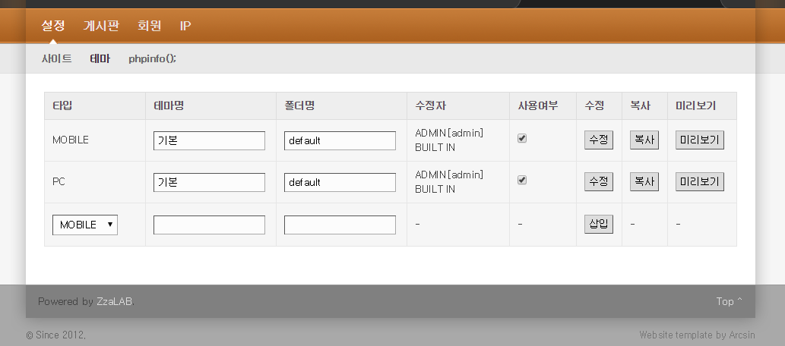
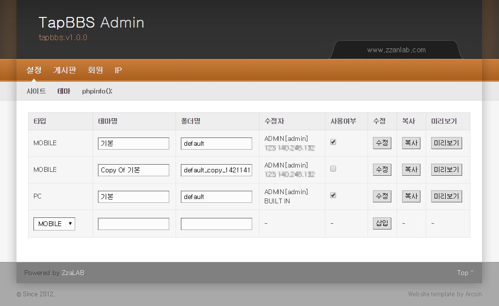
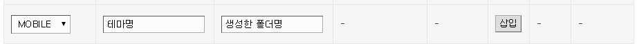

3분 게시판, 초간단 MOBILE && PC 게시판.
TapBBS - ZzanLAB
테마작업
- 관리자페이지 > 설정 > 테마
 - 기본적으로 위와 같이 MOBILE, PC 각각 default 테마가 등록되어 있습니다.
- "사용여부"는 MOBILE, PC 각각 1개씩만 선택할 수 있습니다.
- [수정] 버튼은 테마명, 폴더명, 사용여부를 수정하는 버튼이지 디자인 자체를 수정하는 기능은 아닙니다.
- [미리보기] 버튼으로 실제 테마 사용 전에, 확인해 볼 수 있습니다.
- [복사] 버튼으로 동일한 테마를 복사하여 디자인을 수정해 보실 수도 있습니다.
- 단, 서버설정(SAFE_MODE)이나 권한 문제로 실패 알림이 나올 수 있습니다.
- 성공하면 다음 화면처럼 바뀌고, 아래의 경우 front_end/themes/mobile/default_copy_1421141438 이라는 폴더로 복사되었음을 확인하실 수 있습니다.
 - 아니면, 수동으로 테마폴더를 만들 수 있습니다. 이때는 다음의 순서를 지키셔야 합니다.
1. front_end/themes/mobile||pc/ 에 default 폴더나 기존에 사용하시던 폴더를 복사하고 적절히 폴더명을 정합니다.
2. 위에서 생성한 폴더명을 기입하여 테마정보를 등록합니다. (폴더가 존재하지 않으면 등록되지 않습니다.)
 - 이렇게 생성 후에, 메뉴얼 > 구조 > ./front_end 를 참고하여 디자인 파일을 수정하시면 됩니다.